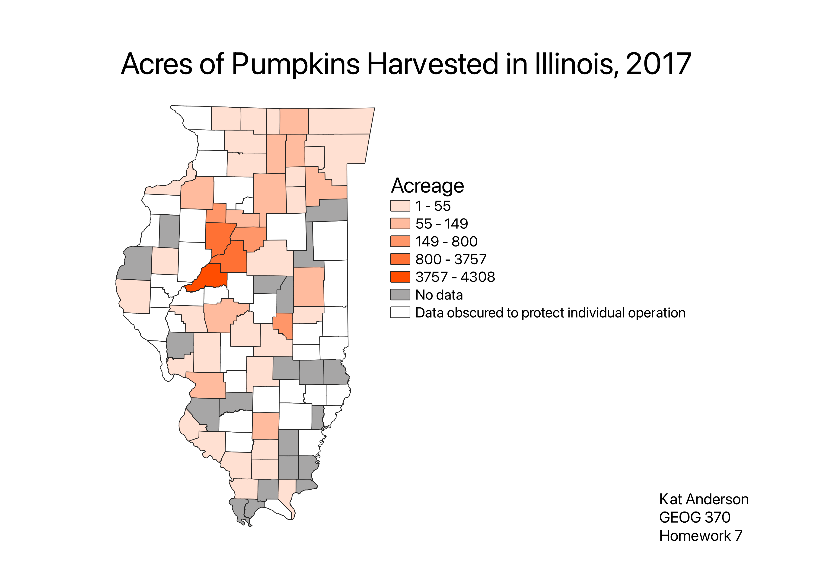

Homework 7: Make a choropleth or proportional symbol map
Kat Anderson
Since Halloween is approaching, I wanted to look for some data from the USDA on pumpkin harvests. Illinois is one of the top pumpkin producers in the United States, so I used a dataset showing acres of pumpkins harvested in Illinois counties to create this choropleth. After downloading the dataset, I deleted unnecessary columns, created new columns for a lowercase version of county names and the number of acres in numerical form. Some of the countries withheld data, which was denoted with (d), and I substituted a 0 in its place to keep the column numerical. I then joined the csv to my shapefile in QGIS to create the choropleth. I made 2 rule based categories, for the withheld data in white and counties with no data in grey.

Data used for this project
USDA Quick Stats Data Source
Uncleaned CSV Dataset
Cleaned CSV Dataset
Illinois Shapefile
Illinois GeoJSON